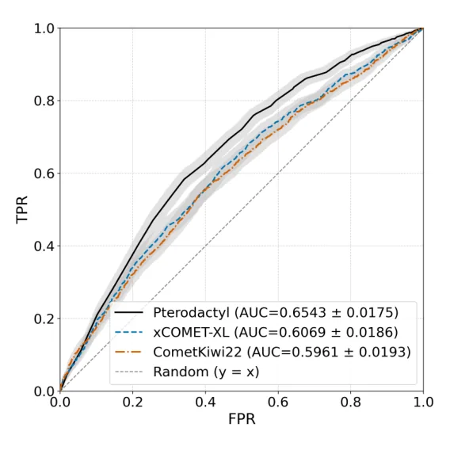
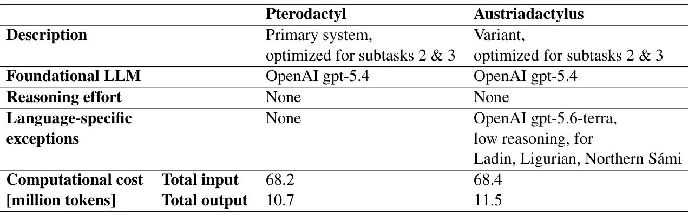

O Problema da Avaliação de Tradução em Produção
A tradução automática neural (NMT) evoluiu rapidamente, mas avaliar a qualidade dessas traduções continua sendo um gargalo. Tradicionalmente, métricas como BLEU ou METEOR dependem de referências humanas, o que é caro e lento. Alternativas modernas, como o Quality Estimation (QE) sem referência, tentam prever a qualidade apenas com o texto fonte e a tradução. Nos últimos anos, a abordagem "LLM-as-a-judge" ganhou tração, onde grandes modelos de linguagem são usados para julgar a qualidade da tradução. No entanto, essa abordagem enfrenta dois obstáculos sérios para uso em produção: o custo computacional elevado e a complexidade de engenharia necessária para estabilizar o sistema.
Os autores deste paper, Evelyn Y. Garland e Carola F. Berger, do 1020 Group, em colaboração com Acta Language Services e CFB Scientific Translations, identificam que a maioria dos sistemas baseados em LLMs é desenvolvida sem uma rigorosa análise de trade-off entre custo e desempenho. O resultado é um sistema que pode ser preciso, mas inviável economicamente para rodar em milhões de segmentos de tradução. O objetivo do trabalho é demonstrar que é possível empurrar os limites da eficiência, criando um sistema que seja não apenas preciso, mas também ultra-leve, rápido e robusto a variações nos dados de treinamento e anotação.
O paper foca especificamente nas subtarefas 2 e 3 da tarefa compartilhada WMT26 sobre avaliação automática de qualidade. A subtarefa 2 envolve a previsão de pontuação de qualidade em nível de segmento, enquanto a subtarefa 3 foca na detecção binária de segmentos livres de erros. Estas tarefas são fundamentais para a triagem de dados: empresas precisam filtrar automaticamente traduções ruins ou identificar aquelas que estão prontas para publicação sem revisão humana. O sistema proposto, chamado Pterodactyl, é desenhado para atender a esses requisitos com um custo mínimo de tokens e tempo de inferência.
A Premissa do Pterodactyl: LLM como Juiz e Análise ROC
O núcleo do Pterodactyl é a premissa de usar um LLM como um juiz automatizado. Em vez de treinar um modelo pequeno do zero (o que exigiria grandes datasets anotados), os autores utilizam a capacidade de raciocínio e linguagem natural dos LLMs comerciais para avaliar a qualidade. No entanto, diferentemente de abordagens ingênuas que simplesmente aplicam prompts genéricos, o Pterodactyl emprega uma metodologia rigorosa de engenharia de prompts e seleção de modelos guiada pela Análise da Curva ROC (Receiver Operating Characteristic).
A Análise ROC é uma ferramenta estatística que avalia o desempenho de um classificador binário em todos os limiares de classificação possíveis. Ela plota a Taxa de Verdadeiros Positivos (Sensibilidade) contra a Taxa de Falsos Positivos (1 - Especificidade). No contexto do Pterodactyl, a área sob a curva (AUC) serve como um critério de triagem eficiente. Os autores argumentam que, para tarefas de triagem e curadoria de dados, a capacidade do modelo de separar claramente traduções boas de ruins é mais importante do que a precisão absoluta em um único ponto de corte. Portanto, a ROC permite identificar quais combinações de modelo e prompt oferecem a melhor discriminação.
Esta abordagem unifica parcialmente a engenharia para as duas subtarefas. Se um par de modelo e prompt demonstra alta capacidade de discriminação na ROC, ele é considerado um forte candidato tanto para a previsão de scores (subtarefa 2) quanto para a detecção binária de erros (subtarefa 3). Isso simplifica o pipeline de desenvolvimento, evitando a necessidade de otimizar separadamente cada componente para cada tarefa específica, economizando tempo e recursos computacionais durante a fase de engenharia.

Engenharia de Modelos e Prompts: Eficiência sobre Poder Bruto
Uma das descobertas centrais do paper é que modelos menores e mais antigos podem superar modelos de fronteira (mais novos e maiores) se a engenharia de prompts for adequada e a seleção for guiada por critérios de eficiência. Os autores testaram várias considerações durante o desenvolvimento. A primeira foi se modelos de fronteira, mais recentes e maiores, eram inerentemente melhores para QE. A resposta foi negativa em termos de custo-benefício: quando o desempenho era estatisticamente similar, eles optaram pelo modelo mais barato e rápido.
A segunda consideração foi se o aumento do raciocínio (por exemplo, usando técnicas de Chain-of-Thought ou modelos com maior capacidade de inferência) melhoraria a performance. Embora o raciocínio possa ajudar em tarefas complexas, para a triagem binária de qualidade de tradução, a sobrecarga computacional muitas vezes não justificava o ganho marginal, especialmente quando a curva ROC já indicava uma boa separação com modelos mais simples. O Pterodactyl é, portanto, um sistema "fit-for-purpose": ele é ajustado para ser exatamente tão complexo quanto necessário para a tarefa, não mais.
O processo de seleção envolveu testar um pool de modelos comerciais disponíveis. Para cada modelo, os autores iteraram sobre diferentes configurações de prompt, buscando maximizar a AUC na ROC. Uma vez identificadas as combinações que ofereciam desempenho similar, o critério de desempate foi estritamente o custo em tokens e a latência. Isso resultou em um sistema que é altamente personalizável: equipes podem escolher o modelo base dependendo de suas restrições orçamentárias, sabendo que a estrutura do prompt e a lógica de avaliação foram otimizadas para aquele perfil de eficiência.
Desafios da Subtarefa 3: Robustez ao cESA
A subtarefa 3 do WMT26 introduz uma complexidade adicional: a detecção de segmentos livres de erros baseada em anotação contrastiva de spans de erro (cESA). O cESA é um método de anotação humana relativamente novo, onde os anotadores identificam não apenas erros, mas também spans corretos em contraste. Isso cria um padrão-ouro (gold standard) diferente das anotações tradicionais de spans de erro (ESA). Como não há grandes datasets de desenvolvimento para o cESA, os autores precisaram garantir que o Pterodactyl fosse robusto a variações no limiar de pontuação que separa a classe "livre de erros" da classe "com erros".
Robustez, neste contexto, significa que o sistema não deve ser excessivamente sensível a pequenas mudanças no limiar de decisão ou a discrepâncias entre anotadores humanos. Anotações humanas nunca são perfeitamente consistentes; há sempre um grau de subjetividade. Se o sistema for otimizado para um limiar muito específico, ele pode falhar quando aplicado a dados reais com ruído. O Pterodactyl foi desenhado para manter um desempenho estável mesmo quando o padrão-ouro varia ligeiramente devido a essa discordância inter-annotator.
Os autores desenvolveram várias variantes do Pterodactyl especificamente adaptadas para a subtarefa 3. Essas variantes mantêm a estrutura básica de LLM-as-a-judge, mas ajustam os prompts e os critérios de avaliação para se alinhar melhor com a lógica do cESA. O foco não é apenas classificar corretamente, mas fazer isso de forma que a classificação seja confiável mesmo quando a fronteira entre "erro" e "sem erro" é sutil ou ambígua para humanos.

Resultados e Comparação com Baselines
Os resultados do Pterodactyl são apresentados em comparação com sistemas de referência estabelecidos, como CometKiwi22 e xCOMET-XL. O CometKiwi22 é um modelo de qualidade de tradução amplamente utilizado, baseado em transformers e treinado em grandes datasets multilingues. O xCOMET-XL é uma versão maior e mais recente do xCOMET, conhecido por sua alta precisão em métricas de qualidade. A Figura 2 do paper mostra a curva ROC do Pterodactyl comparada a esses baselines no dataset WMT25 de inglês para chinês (en→zh).
A análise da curva ROC revela que o Pterodactyl supera o CometKiwi22 e o xCOMET-XL em termos de capacidade de discriminação. Isso significa que, para qualquer taxa de falsos positivos, o Pterodactyl consegue alcançar uma taxa de verdadeiros positivos mais alta. Este resultado é particularmente significativo porque o Pterodactyl é baseado em um LLM de custo potencialmente menor (dependendo da configuração escolhida), enquanto os baselines são modelos dedicados de QE, que podem ser pesados e complexos de implantar.
A Tabela 1 detalha os custos computacionais envolvidos. Ela compara o Pterodactyl com outra variante chamada Austriadactyl, mostrando o número de tokens consumidos para pontuar os dados de teste oficiais do WMT26. Os dados indicam que o Pterodactyl consegue alcançar um desempenho competitivo com um consumo de tokens significativamente reduzido em comparação com o uso de LLMs de fronteira sem otimização. Isso valida a premissa central do paper: é possível obter alta qualidade de avaliação sem sacrificar a eficiência econômica.
Limitações e Considerações Finais
Apesar dos resultados promissores, o paper reconhece algumas limitações. A abordagem LLM-as-a-judge depende intrinsecamente da qualidade do prompt e da estabilidade do modelo base. Se o LLM subjacente mudar ou se houver viés no prompt, o desempenho pode variar. Além disso, a metodologia foi otimizada para as tarefas específicas do WMT26. Embora a estrutura seja generalizável, a engenharia de prompts pode exigir recalibração para diferentes pares de idiomas ou domínios específicos (como médico ou jurídico), onde os critérios de erro podem ser mais rigorosos.
Outra limitação é a dependência da análise ROC como critério principal. Embora a ROC seja excelente para avaliar a discriminação binária, ela não captura diretamente a calibração de probabilidades. Para tarefas de previsão de score contínuo (subtarefa 2), a calibração é importante para que a pontuação predita corresponda à confiança real do modelo. O paper foca mais na separação de classes do que na precisão absoluta do score, o que é adequado para triagem, mas pode exigir ajustes finos para aplicações que dependem de métricas quantitativas precisas.
Finalmente, a abordagem propõe uma mudança de paradigma na engenharia de sistemas de QE: em vez de buscar o modelo mais poderoso disponível, busca-se a combinação mais eficiente que atenda aos requisitos de discriminação. Isso é particularmente relevante para empresas de tradução e desenvolvimento de IA que lidam com volumes massivos de dados. O Pterodactyl demonstra que, com uma engenharia cuidadosa e métricas de avaliação adequadas, é possível democratizar o acesso a ferramentas de alta qualidade de avaliação de tradução, reduzindo a barreira de entrada de custos computacionais elevados.
Conclusão
O Pterodactyl representa uma contribuição prática e técnica significativa para o campo da avaliação automática de tradução. Ao combinar a flexibilidade dos LLMs com a rigorosidade da análise ROC e uma filosofia de otimização de custos, os autores do 1020 Group oferecem uma alternativa viável aos sistemas tradicionais de QE. O sistema não é apenas uma melhoria incremental, mas uma proposta de metodologia: a ideia de que a eficiência e a robustez devem ser tão valorizadas quanto a precisão bruta.
Para desenvolvedores e cientistas de dados que trabalham com processamento de linguagem natural, o paper serve como um estudo de caso sobre como avaliar e selecionar modelos de IA. A lição principal é que a métrica de avaliação deve estar alinhada com o objetivo do negócio. Para triagem de dados, a capacidade de discriminar bons de ruins (medida pela ROC) é mais valiosa do que a precisão em um único ponto. Ao focar nisso, e ao minimizar custos desnecessários, o Pterodactyl estabelece um novo padrão para sistemas de avaliação de tradução eficientes e escaláveis.
O que fica
- O Pterodactyl usa LLMs como juízes, mas otimiza custo e latência selecionando modelos menores quando o desempenho é estatisticamente similar, guiado por curvas ROC.
- O sistema é focado em duas tarefas do WMT26: previsão de pontuação de qualidade e detecção de segmentos sem erros, com alta adaptabilidade.
- A metodologia evita otimização excessiva de componentes individuais, preferindo critérios de triagem compartilhados para manter a estabilidade do sistema.
- Para a detecção de erros, o sistema é robusto a variações no limiar de classificação, crucial para anotações humanas recentes como o cESA.
Paper original: Pterodactyl: Pushing the Limits of Efficient Automated Translation Evaluation
Comentários
Nenhum comentário ainda. Seja o primeiro.